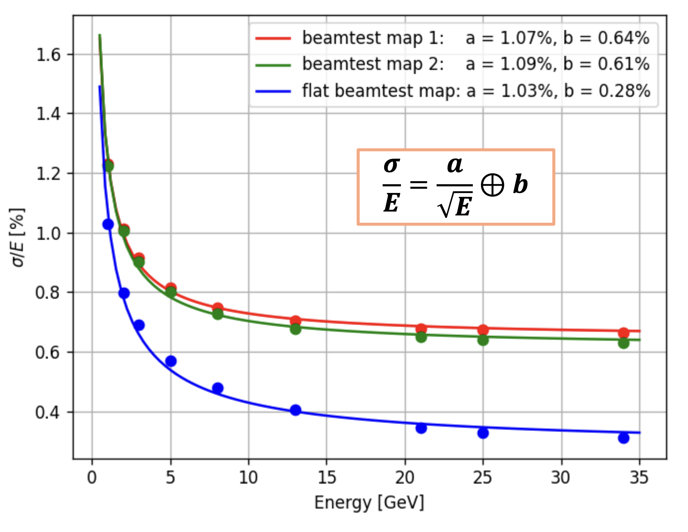
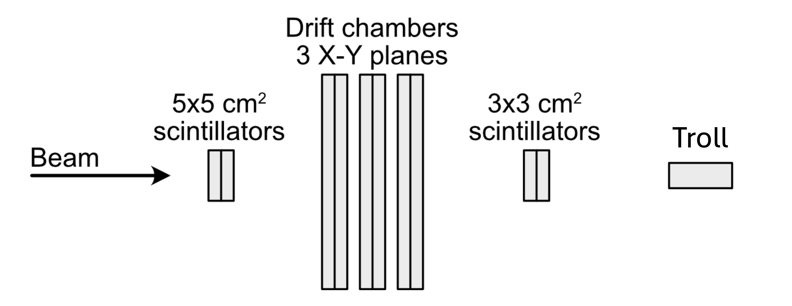
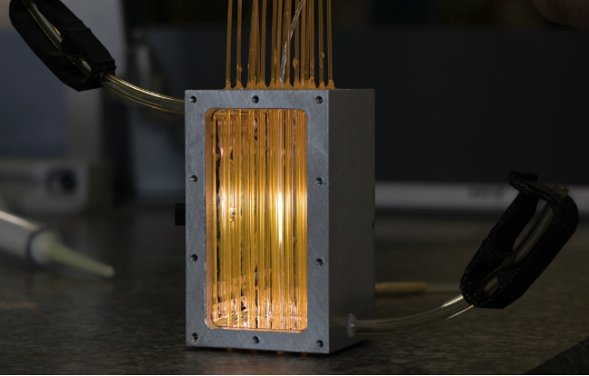
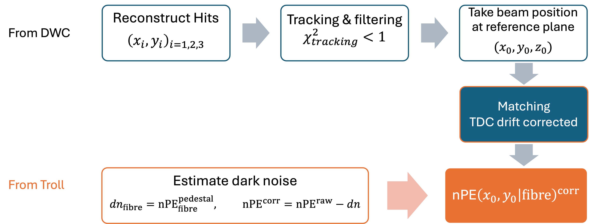

01
Sensor Simulation & Reconstruction
Built a simulation-and-measurement workflow to quantify how detector non-uniformity affects energy resolution, using beam-test data to constrain the model instead of assuming ideal sensor response.

Problem
The key question was how much detector non-uniformity would degrade the energy resolution of a calorimeter. A flat-response simulation was not sufficient, because the measured light-collection efficiency changed across the detector volume, while a full optical simulation would add major complexity and computational cost. At the prototype development stage, combining a simplified simulation with an effective light-collection efficiency map measured from test-beam data is the most practical way to evaluate resolution.
Workflow
- Built the measurement-to-simulation chain around the beam-test setup, combining the first prototype response, beam-position tracking, and dedicated analysis code to recover position-dependent light-yield information.
- Used the June 2024 test-beam analysis to turn beam-position-resolved measurements into an effective light-yield / uniformity map and then injected that map into the Geant4-based energy-deposition simulation so that effective detected energy could be computed event by event under realistic response assumptions.
- Implemented detector geometry, stepping, and response logic in Geant4/C++ and used the resulting distributions to fit energy-resolution curves under both measured and idealised response maps.



Result
- Turned a beam-test measurement into a usable simulation input rather than leaving it as a standalone detector study.
- Showed explicitly that non-flat response maps worsen the reconstructed energy resolution relative to a flat-response reference, with a non-uniformity-driven constant term less than
1.0%in the detailed study, which strengthens confidence in simulation-informed design decisions.
Publications & Reports
- Publication: Studying the GRAiNITA concept: first test beam results. DOI: 10.1088/1748-0221/21/03/P03048
- [Technical note: GRAiNiTA: June 2024 Test beam] documents the beam-test setup, light-collection measurements, and the response-map construction later injected into simulation.
Impact: linked measured non-uniformity to system-level resolution through both simulation code and experimental validation.
Industry relevance: Sensor Analytics | Measurement Systems | Simulation-Assisted Design